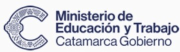

Tu voz importa
Entrevistas, podcasts, debates y relatos creados por estudiantes. La oralidad, la escucha y la producción se vuelven experiencias reales.

Un espacio para que estudiantes se conviertan en protagonistas: investiguen su realidad, hagan entrevistas, creen contenidos y compartan lo que aprenden usando el lenguaje de los medios digitales.
¡Qué Onda! propone usar el streaming como experiencia pedagógica: aprender a comunicar, investigar, trabajar en equipo y participar en conversaciones significativas sobre la comunidad y su futuro.
Entrevistas, podcasts, debates y relatos creados por estudiantes. La oralidad, la escucha y la producción se vuelven experiencias reales.
Historias, cultura, ciencia y desafíos de los territorios catamarqueños, contados desde las escuelas y sus propias comunidades.
Ciudadanía digital, alfabetización mediática, tecnología e inteligencia artificial con criterio, verificación y responsabilidad.
En la propuesta de trabajo, cinco estudiantes producen cada programa y los roles rotan para que todos puedan experimentar distintas formas de comunicar. Tocá cada función para conocerla.
Da la bienvenida, conduce las conversaciones y organiza los tiempos del programa.
Mora, Mati y La Cabra Mari acompañan la propuesta para preguntar, explicar, equivocarse, volver a intentar y celebrar descubrimientos.
Le encantan las preguntas, las historias y mirar con atención lo que pasa a su alrededor.
Disfruta los desafíos, los números, la tecnología y buscar nuevas soluciones.
Es divertida, un poquito torpe y siempre descubre otra forma de aprender jugando.
La guía del proyecto plantea emisiones de 30 minutos con tres momentos complementarios. Es una estructura orientativa que cada equipo puede adaptar al tema y a su territorio.
Presentación, historias locales, entrevistas y preguntas que nacen de la comunidad.
Herramientas tecnológicas, alfabetización digital, IA y análisis crítico de la información.
Participación, preguntas de la audiencia, reflexiones y cierre de la emisión.
El documento de trabajo contempla cinco instituciones de diferentes localidades y perfiles educativos.
Ingresá a la prueba piloto: tres desafíos conectan Lengua, Matemática, inteligencia artificial y ciudadanía digital. Investigá un titular, jugá con datos y decidí qué compartir.